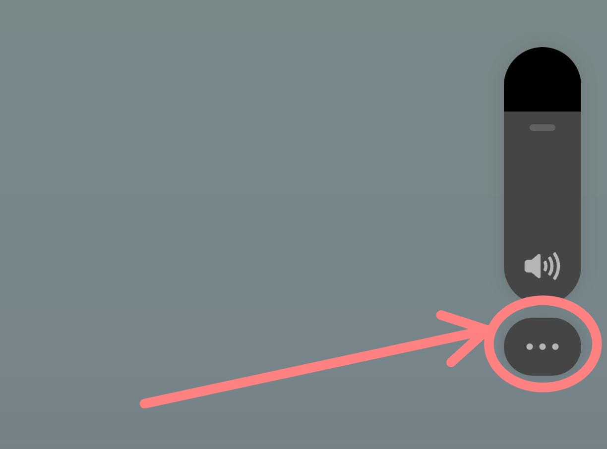
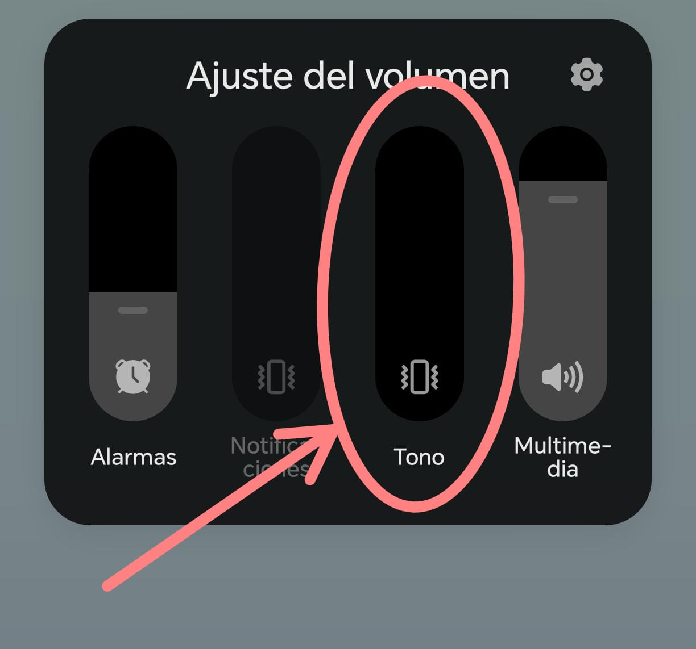
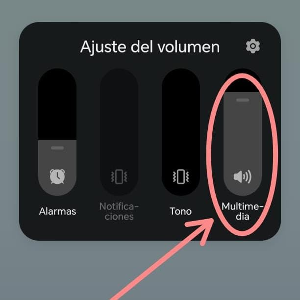

Volumen de Llamadas
- 1️. Presione los botones laterales del celular.
- 2️. Toque los 3 puntitos que aparecen en la pantalla.
- 3️. Toque la opción "Tono de llamada".
- 4️. Deslice la barra hacia arriba para subir el volumen.
- 5️. Deslice hacia abajo para bajarlo.


Volumen Multimedia
- 1️. Presione los botones laterales del celular.
- 2️. Toque los 3 puntitos que aparecen en la pantalla.
- 3️. Toque la opción "Multimedia".
- 4️. Deslice la barra hacia arriba para subir el volumen.
- 5️. Deslice hacia abajo para bajarlo.
